MIGUEL MADRIGAL
AUTOMOTIVE PHOTOGRAPHER & CONTENT CREATOR
カーフォトグラファー & コンテンツクリエイター
Shooting cars in Tokyo.
東京で車を撮ってます。
Hey! I'm Miguel, an automotive photographer based in Tokyo, Japan. My goal is to create art; I want to make work that you'd hang on the wall like a painting or a wallpaper on your phone. With whatever car you have, I'll make it feel like a product straight out of a commercial advertisement. People usually keep a picture of a loved one in a frame on their shelves or in their phone case, but I rather have a photo of my beloved car.
Aside from being a photographer, I also just like cars. I love the car scene here in Tokyo and it's great to meet many different kinds of people! My clients are really chill people and a lot of the times we're just having fun conversations in the midst of the shoot. If you're interested in having a session, please shoot me a quick DM!
こんにちは！東京を拠点に活動しているカーフォトグラファーのミゲルです。私の目標は「アート」を作ること。まるで壁に飾る絵画やスマホの壁紙にしたくなるような作品を生み出したいと思っています。どんな車であっても、コマーシャル広告から飛び出してきたような一枚に仕上げます。普通は大切な人の写真を写真立てやスマホケースに入れますが、私は自分の愛車の写真を飾りたいタイプです。
フォトグラファーである以前に、ただの車好きでもあります。東京の車カルチャーが大好きで、色んな人たちに出会えるのが本当に楽しいです！クライアントはみんな最高にチルな人たちばかりで、撮影中も車トークで盛り上がることがほとんどです。もし撮影に興味があれば、気軽にDMを送ってください！
Field POV & Camera Work リアルな撮影現場のPOVクリップ
Raw, first-person clips capturing rolling tracking rigs, night highway sessions, touge mountain passes, and on-location staging across Tokyo.
首都高でのローリング追走、深夜のストリート、峠のワインディングなど、現場でのリアルなカメラワークや撮影風景をPOVで体感してください。
The Gallery
作品ギャラリー

Touge Formation 峠フォーメーション
Dynamic three-car rolling formation carving through scenic mountain pass curves with high-speed tracking and motion blur.
雄大な山岳ワインディングロードを駆け抜ける3台のGR86。高速トラッキングで捉えた圧倒的な躍動感とスピードの軌跡。

Initial D Heritage イニシャルD ヘリテージ
Iconic AE86 Sprinter Trueno parked side-by-side with the modern Orange GR86 in Shiodome Italia-gai.
汐留イタリア街で、新旧のオレンジGR86と並んで駐車するアイコニックなAE86スプリンタートレノ。

Porsche 935 K3 ポルシェ 935 K3
Legendary Dunlop racing livery Kremer 935 parked under the warm golden neon storefront lights in Shinjuku.
新宿の夜のネオンとストリートの光に照らし出される、伝説のダンロップカラー・クレーマーポルシェ935 K3。
{kind=link}
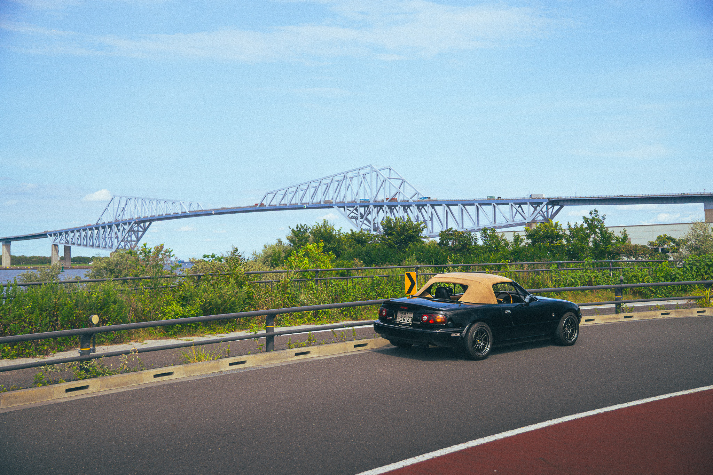
{kind=link}
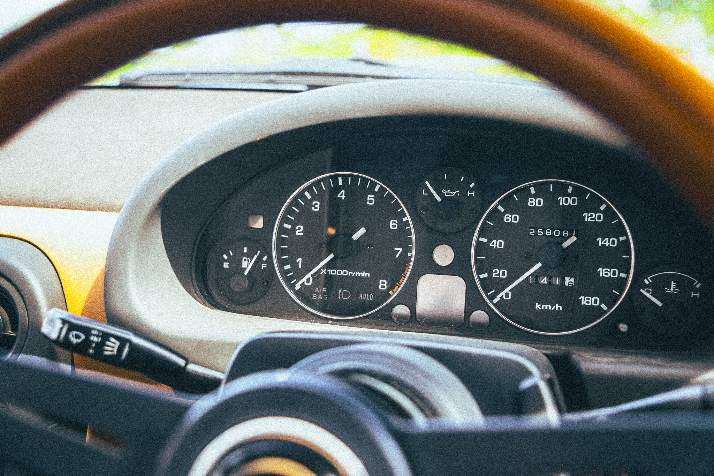
{kind=link}
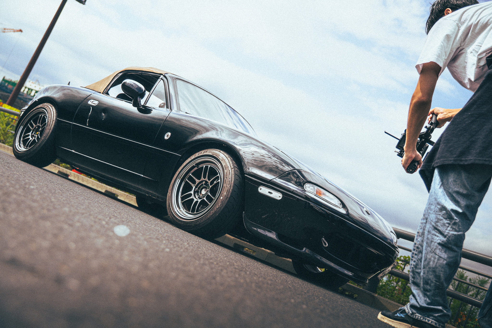
{kind=link}
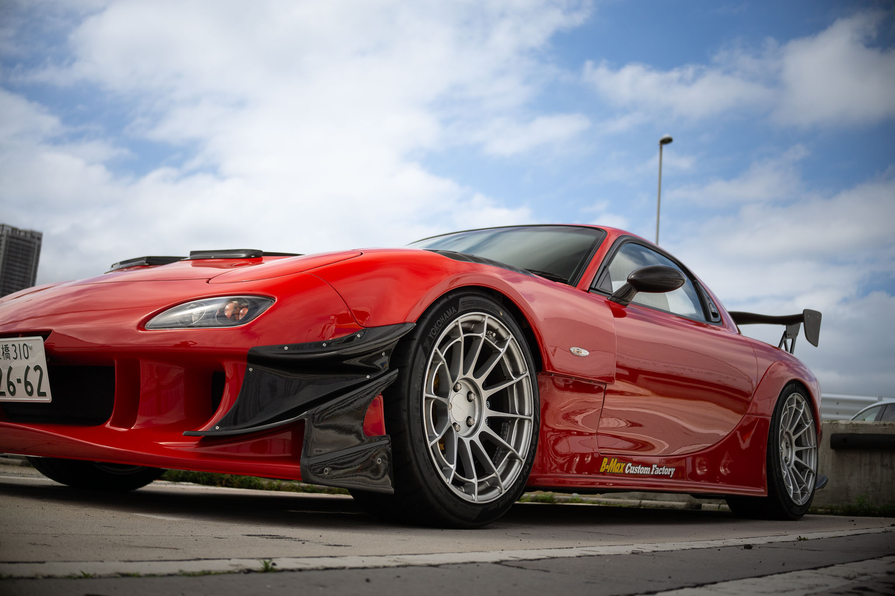
{kind=link}
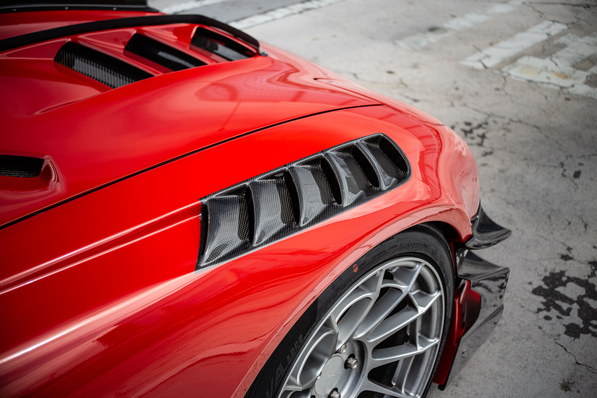
{kind=link}
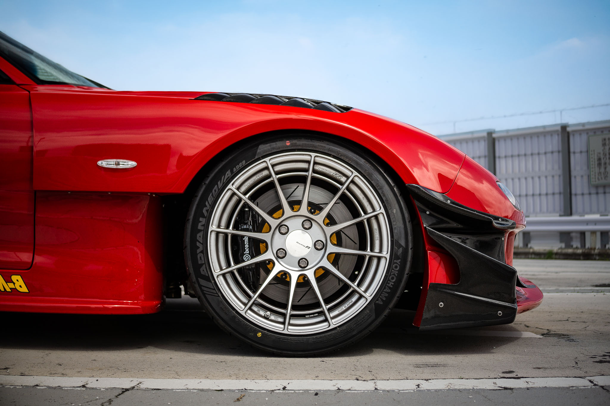

{kind=link}
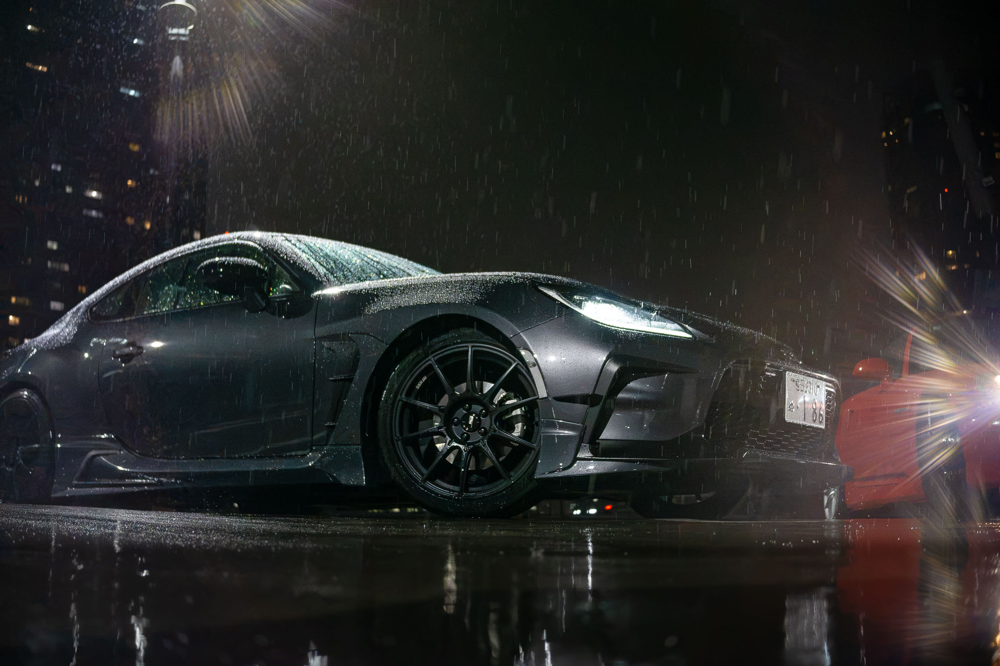


{kind=link}
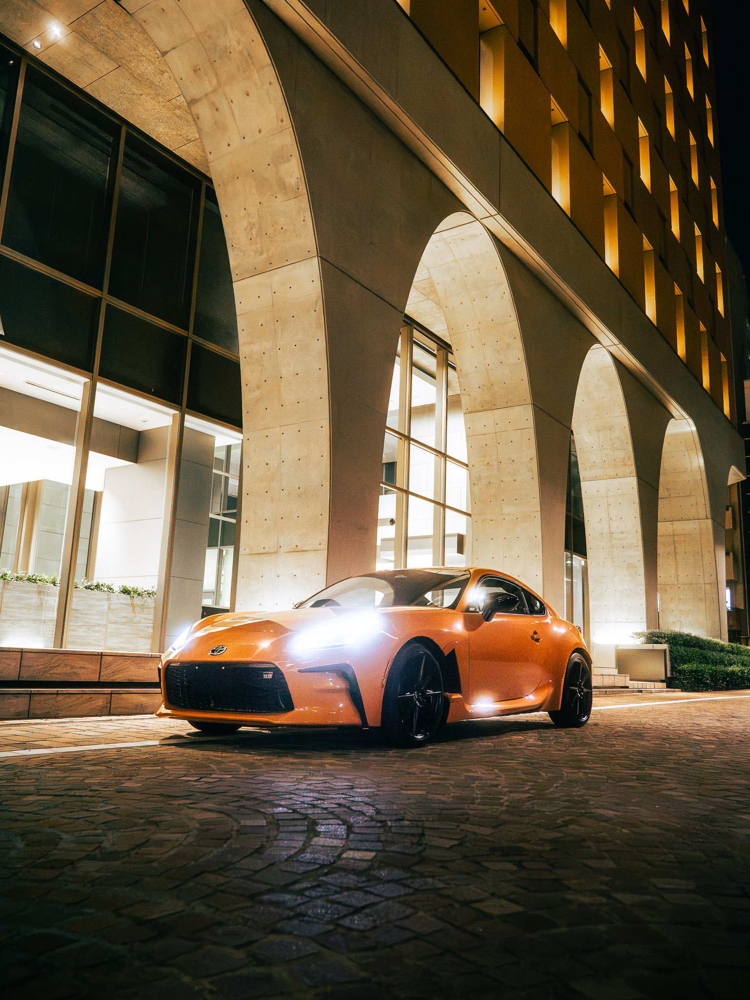

{kind=link}
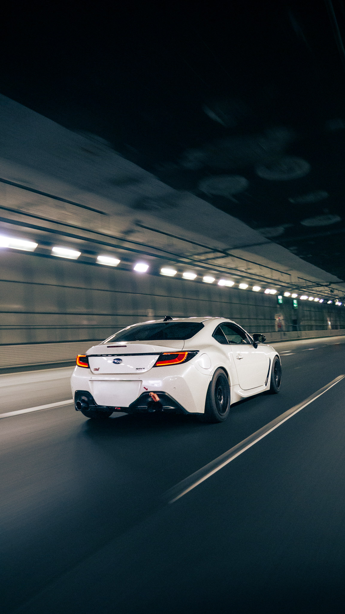


{kind=link}
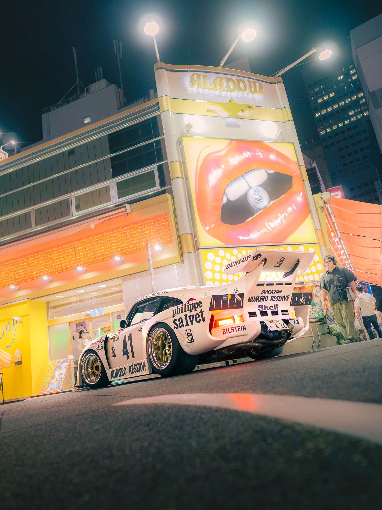
{kind=link}
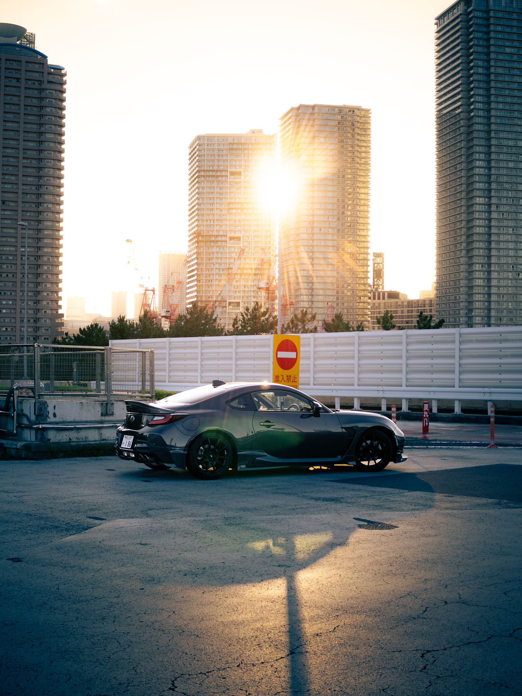


{kind=link}
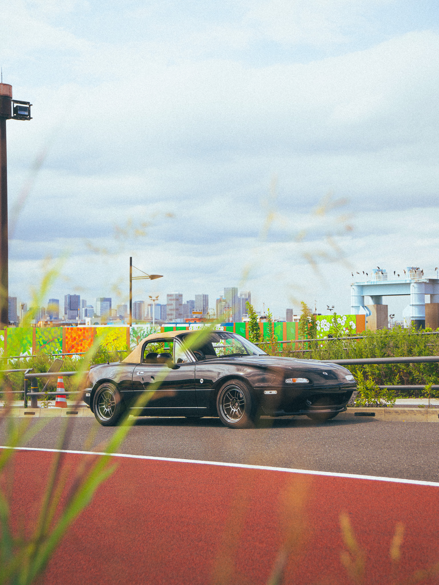
{kind=link}
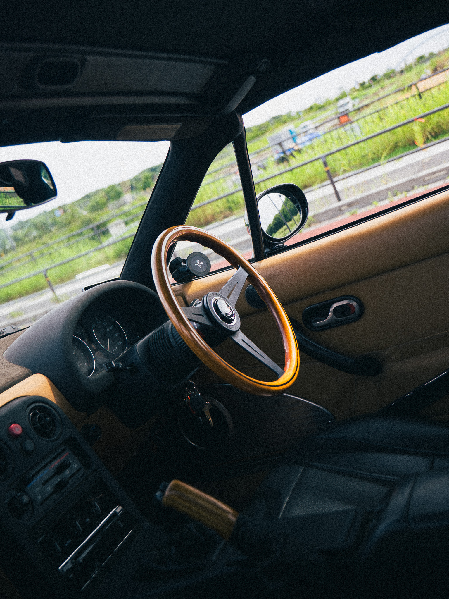
{kind=link}
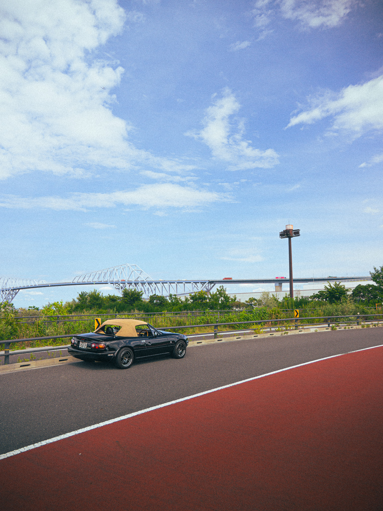
{kind=link}
{kind=link}
{kind=link}
{kind=link}
{kind=link}
{kind=link}
{kind=link}
{kind=link}
{kind=link}
{kind=link}
{kind=link}
{kind=link}
{kind=link}
{kind=link}
{kind=link}
{kind=link}
{kind=link}
{kind=link}
{kind=link}
{kind=link}
{kind=link}
{kind=link}
{kind=link}
{kind=link}
{kind=link}
{kind=link}
{kind=link}
{kind=link}
{kind=link}
{kind=link}
{kind=link}
{kind=link}
{kind=link}
{kind=link}
{kind=link}
{kind=link}
{kind=link}
{kind=link}
{kind=link}
{kind=link}
{kind=link}
{kind=link}
{kind=link}
{kind=link}
{kind=link}
{kind=link}
{kind=link}
{kind=link}
Services & Rates
サービス ＆ 料金プラン
Photoshoot packages designed to capture your ride in the best light. Rates are kept transparent and competitive to deliver clean, professional visual assets for private car owners and collectors.
愛車を最高のアートとして残すための撮影パッケージです。オーナー様やコレクター様に向け、明確で分かりやすい適正料金プランをご提案します。
The Static Session
スチール撮影
- 1 Location (e.g., Tatsumi PA or Shiodome)
- 10–15 high-res, color-graded photos
- 1–1.5 hours duration
- Private online gallery download
- 1ロケーション（例：辰巳PA、汐留など）
- 高解像度レタッチ済みデータ 10〜15枚
- 撮影時間 1〜1.5時間
- 専用オンライン納品（ダウンロード対応）
The Roller Session
ローリング撮影
- Highway or Touge route
- Chase car and driver provided
- 8–10 high-res, color-graded rolling shots
- 1–1.5 hours driving duration
- 高速道路または峠ルート
- 撮影用チェイスカー＆ドライバー手配込み
- 高解像度レタッチ済み走行写真 8〜10枚
- 撮影時間 1〜1.5時間（走行）
The Complete Experience
コンプリート・エクスペリエンス
- 1-2 Static Locations + Rolling Route
- 25–30 high-res, color-graded photos
- Chase car and driver provided
- 3–4 hours duration (Afternoon to Night)
- 1〜2ロケーション ＋ 走行ルート
- 高解像度レタッチ済みデータ 25〜30枚（静止画＆走行）
- 撮影用チェイスカー＆ドライバー手配込み
- 撮影時間 3〜4時間（夕方から夜間）
Looking for commercial assignments, track days, or specific edits?
商業用撮影、サーキット・走行会、その他特殊レタッチなどをお探しですか？
Get a Custom Quote → カスタムプランを相談する →100% Satisfaction Guarantee
100% 満足保証
If you don’t absolutely love your final edited images, we will do a complete reshoot for free, or issue a 100% full refund. Zero risk.
納品した写真の仕上がりにご満足いただけない場合、無料で再撮影を行うか、全額返金いたします。リスクは一切ありません。
Private Online Gallery
プライベートオンラインギャラリー
Your high-resolution, ready-to-post edits will be delivered securely via a beautifully formatted private online gallery link.
高解像度のレタッチ済みデータを、専用のプライベートオンラインギャラリーにて安全かつスムーズに納品いたします。
Weather Guarantee
雨天時の無料リスケジュール
Car photography is all about lighting. If it rains heavily on our scheduled day, we can easily move your session to a new date with no penalty fees.
車の撮影において天候は非常に重要です。もし撮影予定日が悪天候の場合は、ペナルティなしで別の日程へ無料で変更できます。
Reserve Your Shoot.
撮影セッションを予約する
Ready to collaborate or book a photoshoot? Send an inquiry with your car details below, email directly, or reach out via Instagram DM for the fastest response.
撮影のご予約やご相談はお気軽にどうぞ。下記のフォーム、メール、またはInstagramのDMよりお気軽にお問い合わせください。
DM @migumadrigal on Instagram
Instagram @migumadrigal にDMを送る
Send a direct message on Instagram for instant shoot coordination and questions.
InstagramのDMから直接お問い合わせいただけます。撮影スケジュールやご要望など、お気軽にご連絡ください。
Message Received!
送信が完了しました！
Thank you for reaching out. Miguel will review your car details and reply within 24 hours.
お問い合わせありがとうございます。内容を確認のうえ、24時間以内にご連絡いたします。